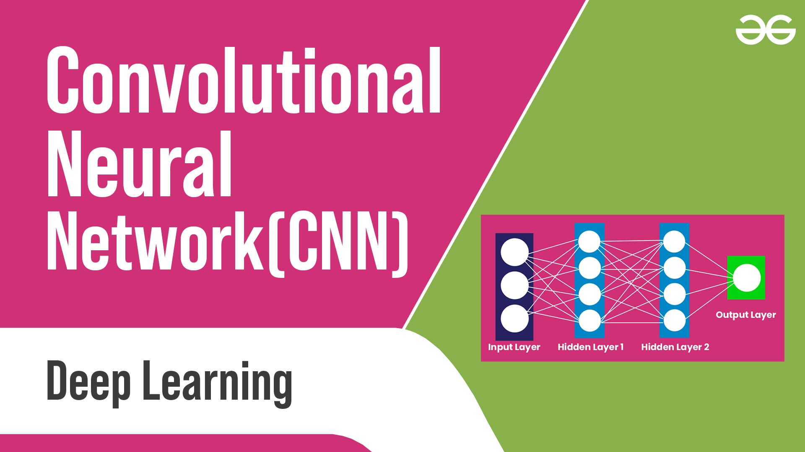

Automated Assessment of the Teacher's Confidence Level in the Classroom
Project Overview
Assessing a teacher's degree of confidence during the hiring process for schools, universities, or other educational establishments can be difficult.We created a model utilising deep learning methods and convolutional neural networks (CNN) to solve this. The model evaluates applicants' video lectures and assesses their degree of confidence, giving recruiters important information to help them make wise choices.
By leveraging advanced algorithms and machine learning techniques, the project aims to bring objectivity and precision to the teacher assessment process, ensuring that institutions recruit confident educators who can inspire and engage students effectively.

Technology Used



Real-World Applications & Potential Impact
- Public Speaking Training: The system can be integrated into public speaking platforms to provide real-time feedback to speakers, enhancing their confidence and presentation skills.
- Interview Analysis: Recruiters can use this technology during interviews to objectively assess candidates’ confidence levels, leading to better hiring decisions.
- Educational Institutions: Schools and colleges can adopt this system to evaluate teachers' confidence during lessons, ensuring a more engaging learning environment for students.


Conclusion
This project provides a powerful tool to objectively measure a teacher's confidence in the classroom environment. By utilizing cutting-edge AI technologies like CNNs, PyTorch, and OpenCV, our solution addresses a crucial gap in educational assessment. It not only streamlines the recruitment process but also helps institutions and individuals enhance their presentation and teaching skills, making a positive impact on education and beyond.